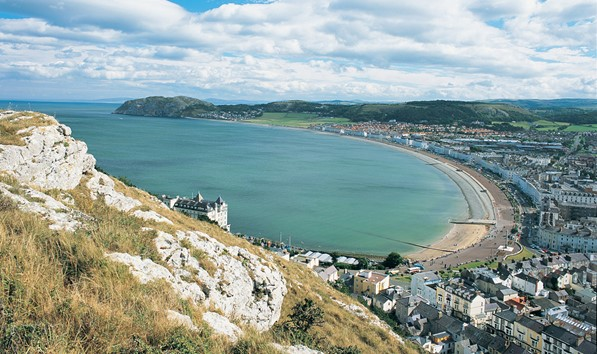
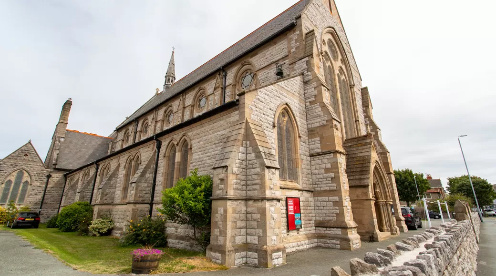
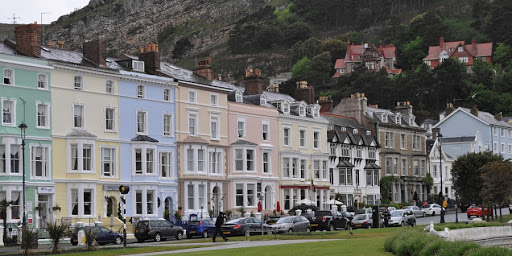

The town of Llandudno developed from Stone Age, Bronze Age and Iron Age settlements over many hundreds of years on the slopes of the limestone headland, known to seafarers as the Great Orme and to landsmen as the Creuddyn Peninsula. The origins in recorded history are with the Manor of Gogarth conveyed by King Edward I to Annan, Bishop of Bangor in 1284. The manor comprised three townships, Y Gogarth in the south-west, Y Cyngreawdr in the north (with the parish church of St Tudno) and Yr Wyddfid in the south-east.
Modern Llandudno takes its name from the ancient parish of Saint Tudno but also encompasses several neighbouring townships and districts including Craig-y-Don, Llanrhos and Penrhyn Bay. Also nearby is the small town and marina of Deganwy and these last four are in the traditional parish of Llanrhos. The ancient geographical boundaries of the Llandudno area are complex: although they are on the eastern side of the River Conwy (the natural boundary between north-west and north-east Wales), the ancient parishes of Llandudno, Llanrhos and Llangystennin (which includes Llandudno Junction) were in the medieval commote of Creuddyn in the Kingdom of Gwynedd, and afterwards part of Caernarfonshire. Today, Deganwy and Llandudno Junction are part of the town community of Conwy even though they are across the river and only linked to Conwy by a causeway and bridge.
You think about vacations and your mind probably travels by the sea. Y is that the binomial summer and beach has become something practically inseparable. If this year you have chosen Wales or you are still raising the possibility that this is your destiny, you don't have to give up on them.
it is a sacred or holy place dedicated to a specific deity, ancestor, hero, martyr, saint, demon, or a figure of similar respect, where are worshiped or worshiped. Shrines often contain idols, relics or other objects associated with the venerated figure. shrine where votive offerings are made is called an altar.
The Wildings Hotel is a charming and cozy place to stay during that weekend getaway, a week by the sea or when found in the city for business.
Victorian hotel located 20 meters from the famous seafront in Llandudno. With its world-famous attractions and Victorian pier to just a few seconds walk from the hotel. You can stroll along the charming promenade maritime, or explore exciting shops, restaurants and theaters that regularly organize West End and major tourism productions throughout the year.
is a traditional Welsh stew made with smoked bacon, broth, potato and another vegetable. In North Wales the munud is sometimes called mynyd.
As a stew it is unique in the sense that all the ingredients The main ones are cut into slices so that they are flat. Because This is usually cooked in a large skillet on the fire, and served in a plate (and not in a bowl). The vegetables used are usually potatoes, onions, carrots (cut lengthwise), and peas. Although usually be made with smoked bacon, occasionally it is replaced by veal chopped.
If you want to learn how to prepare it, I leave you a link to know how to do it
It is a plate with a salty sauce made with a mixture of cheese and various other ingredients served hot on toast. The name came up in the eighteenth century in Britain
If you want to learn how to prepare it, I leave you a link to know how to do it
It is a typical sweet bread native to Wales. Traditionally it prepare with raisins (especially the so-called Zante currant), peel of orange (and even apple), possessing a fairly fluffy mass wet.
If you want to learn how to prepare it, I leave you a link to know how to do it